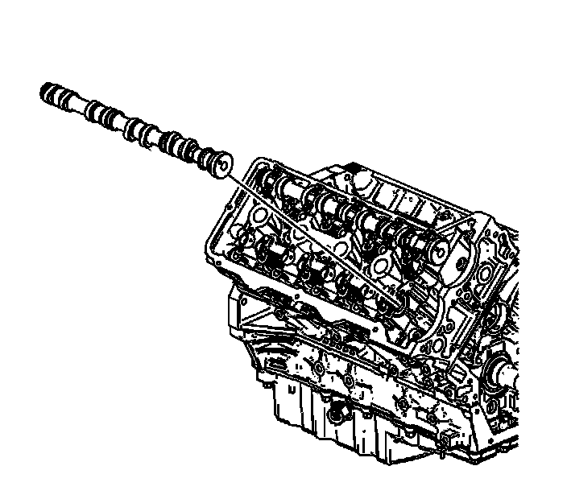

Camshaft Replacement - Right Side
Camshaft Replacement - Right Side
Removal Procedure

1. Remove the right intake camshaft actuator (4). Refer to Camshaft Position Actuator Replacement - Bank 1 (Right Side) Intake (Camshaft Position Actuator Replacement - Bank 1 (Right Side) Intake) .
2. Remove the right exhaust camshaft actuator (10). Refer to Camshaft Position Actuator Replacement - Bank 1 (Right Side) Exhaust (Camshaft Position Actuator Replacement - Bank 1 (Right Side) Exhaust) .

3. Remove the right intake camshaft. Refer to Intake Camshaft Removal - Right Side (Overhaul) .

4. Remove the right exhaust camshaft. Refer to Exhaust Camshaft Removal - Right Side (Overhaul) .
5. Clean and inspect the camshafts. Refer to Camshaft Cleaning and Inspection. Overhaul
Installation Procedure
1. Install the right exhaust camshaft. Refer to Exhaust Camshaft Installation - Right Side (Overhaul) .
2. Install the right intake camshaft. Refer to Intake Camshaft Installation - Right Side (Overhaul) .
3. Install the right exhaust camshaft actuator (10). Refer to Camshaft Position Actuator Replacement - Bank 1 (Right Side) Exhaust (Camshaft Position Actuator Replacement - Bank 1 (Right Side) Exhaust) .
4. Install the right intake camshaft actuator (4). Refer to Camshaft Position Actuator Replacement - Bank 1 (Right Side) Intake (Camshaft Position Actuator Replacement - Bank 1 (Right Side) Intake) .